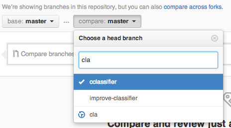

Every repository contains a Compare view, which allows you to compare the state of your repository across branches, tags, commits, time periods, and more. The compare view provides you with the same diff tooling that the Pull Request view does.
To get to the compare view, append /compare to your repository's path.
We'll demonstrate the power of Compare by looking at the compare page for Linguist, which is at https://github.com/github/linguist/compare/.
Every repository's Compare view contains two drop down menus: base and compare.

base should be considered the starting point of your comparison, and compare is the endpoint. During a comparison, you can always change your base and compare points by clicking on Edit.
Comparing branches
The most common use of Compare is to compare branches, such as when you're starting a new Pull Request. You'll always be taken to the branch comparison view when starting a new Pull Request.
To compare branches, you can select a branch name from the compare drop down menu at the top of the page.
Here's an example of a comparison between two branches.
Comparing tags
Similarly, you can compare across tags made for project releases. Comparing against tags is a great way to assemble release notes between different versions of your project.
Instead of typing a branch name, type the name of your tag in the compare drop down menu.
Here's an example of a comparison between two tags.
Comparing commits
You can also compare two arbitrary commits in your repository. Comparisons between commits are made by providing either the full SHA hash or the short eight-character code.
Here's an example of a comparison between two commits.
Comparing across forks
You can compare your base repository and any forked repository. This is the view that's presented when a user performs a Pull Request to a project.
To compare branches on different repositories, preface the branch names with user names. For example, by specifying github:master for base and gjtorikian:master for compare, you can compare the master branch of the repositories respectively owned by github and gjtorikian.
Here's an example of a comparison between two repositories.
Comparisons across time
Comparisons can be created for arbitrary time periods, like one month or two weeks. To define a time period, type the branch name, followed by a @, and then the date wrapped between a { } notation. For example, typing master@{2weeks} into the compare dropdown menu compares a branch against the master branch as it was two weeks prior.
Here's an example of a comparison between two time periods.
Comparisons across commits
As a shortcut, Git uses the ^ notation to mean "one commit prior."
You can use this notation to compare a single commit or branch against its immediate predecessors. For example, 96d29b7^^^^^ indicates five commits prior to 96d29b7, because there are five ^ marks.
Here's an example of a comparison using the ^ notation.